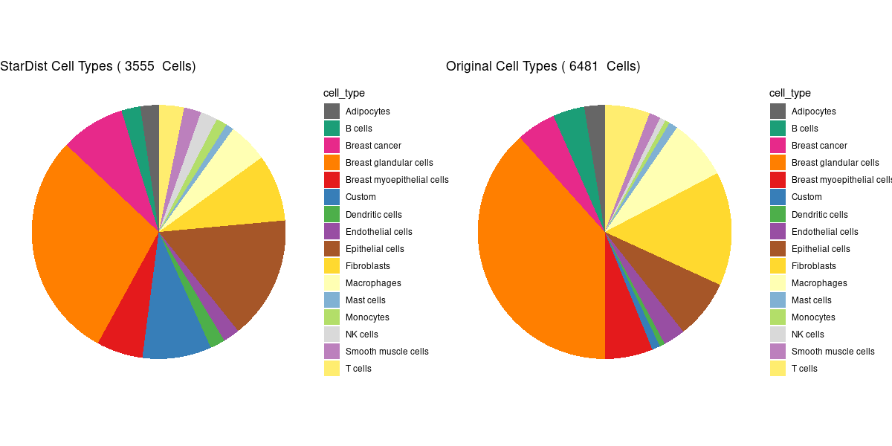

In this demo, the Xenium Pre-Release Human Breast Cancer Dataset from 10X Genomics will be analyzed using Giotto Suite. Only the first tissue replicate is considered in this analysis. First, ensure Giotto Suite is installed and that the data has been unpacked into an appropriate directory. Then, the analysis begins with loading necessary libraries.
no external python path was provided, but a giotto python environment was found
and will be used
Specify the appropriate path to import the files into R.
Code
# ** SET PATH TO FOLDER CONTAINING XENIUM DATA **xenium_folder ='/projectnb/rd-spat/DATA/Public_data/Spatial/Multiplexing_RNA/xenium/FFPE_Human_Breast_Cancer/Rep1/'# General files:settings_path =paste0(xenium_folder, 'Xenium_FFPE_Human_Breast_Cancer_Rep1_experiment.xenium')he_img_path =paste0(xenium_folder, 'Xenium_FFPE_Human_Breast_Cancer_Rep1_he_image.tif')if_img_path =paste0(xenium_folder, 'Xenium_FFPE_Human_Breast_Cancer_Rep1_if_image.tif')panel_meta_path =paste0(xenium_folder, 'Xenium_FFPE_Human_Breast_Cancer_Rep1_panel.tsv') # (optional)# Subcellular files:cell_bound_path =paste0(xenium_folder, 'Xenium_FFPE_Human_Breast_Cancer_Rep1_cell_boundaries.csv.gz')nuc_bound_path =paste0(xenium_folder, 'Xenium_FFPE_Human_Breast_Cancer_Rep1_nucleus_boundaries.csv.gz')tx_path =paste0(xenium_folder, 'Xenium_FFPE_Human_Breast_Cancer_Rep1_transcripts.csv.gz')feat_meta_path =paste0(xenium_folder, 'cell_feature_matrix/features.tsv.gz') # (also used in aggregate)# Aggregate files:expr_mat_path =paste0(xenium_folder, 'cell_feature_matrix')cell_meta_path =paste0(xenium_folder, 'Xenium_FFPE_Human_Breast_Cancer_Rep1_cells.csv.gz') # contains spatlocs# Cell typing files:gene_groups_path =paste0(xenium_folder,"Xenium_FFPE_Human_Breast_Cancer_Rep1_gene_groups.csv")feat_groups = data.table::fread(gene_groups_path, header =FALSE)colnames(feat_groups) =c("feature", "cell_type")
Metadata Loading and Exploration of Different Probes for QC
Code
# Load feature metadata# cell_feature_matrix folder must be unpacked before runtime!feature_dt = data.table::fread(feat_meta_path, header =FALSE)colnames(feature_dt) =c('feat_ID','feat_name','feat_type')# Identify feature IDs that belong to each feature typefeature_dt[, table(feat_type)]
feat_type
Blank Codeword Gene Expression Negative Control Codeword
159 313 41
Negative Control Probe
28
The path to the transcripts with their respecitve locations will be loaded in using data.table, and some column names are changed for Giotto Suite conventions. The transcripts may then be filtered, here they are filtered according to the Phred score used by 10X. The detected transcripts are then fed into createGiottoPoints().
Now that the transcript data has been imported to the Giotto Obejct in the form of GiottoPoints, the cell segmentation data must be imported in the form of GiottoPolygons so that an expression matrix can be created later on. After importing the boundary.csv.gz files for cell and nucleus segmentations and applying some small naming convention changes, the resulting data.tables can become GiottoPolygons.
The GiottoPolygon centroids can be immediately visualized using the plot function.
Code
plot(x = gpoly_nucs, point_size =0.1, type ='centroid')
3 Create a Giotto Object
The transcript information in the form of GiottoPoints and the polygon information in the form of GiottoPolygons may now be fed into createGiottoObjectSubcellular to create a Giotto Object.
For Spatial info: cell
An object of class giottoPolygon
spat_unit : "cell"
Spatial Information:
class : SpatVector
geometry : polygons
dimensions : 167782, 1 (geometries, attributes)
extent : 0, 7525.9, 0, 5478.038 (xmin, xmax, ymin, ymax)
coord. ref. :
names : poly_ID
type : <chr>
values : 1
2
3
centroids : calculated
overlaps : calculated-----------------------------
For Spatial info: nucleus
An object of class giottoPolygon
spat_unit : "nucleus"
Spatial Information:
class : SpatVector
geometry : polygons
dimensions : 167782, 1 (geometries, attributes)
extent : 1.4875, 7524.413, 0, 5478.038 (xmin, xmax, ymin, ymax)
coord. ref. :
names : poly_ID
type : <chr>
values : 1
2
3
centroids : calculated
overlaps : calculated-----------------------------
4.1 Assign polygon overlaps information to expression matrix
In order to create an aggregated expression matrix, the 'rna' features overlapped by the 'cell' polygon boundaries are sent to be combined into a cell/feature matrix (named as 'raw') in the Giotto object’s expression slot.
After creating the expression matrix from the polygon and transcript overlaps, the data may be normalized and clustered in a pipeline similar to that which is depicted below:
Adding Metadata, Normalization, and Calculating Highly Variable Features
4.2 Add Metadata
Code
panel_meta = data.table::fread(panel_meta_path)data.table::setnames(panel_meta, 'Name', 'feat_ID')# Append this metadataxenium_gobj =addFeatMetadata(gobject = xenium_gobj,feat_type ='rna',spat_unit ='cell',new_metadata = panel_meta,by_column =TRUE,column_feat_ID ='feat_ID')xenium_gobj =addFeatMetadata(gobject = xenium_gobj,feat_type ='rna',spat_unit ='nucleus',new_metadata = panel_meta,by_column =TRUE,column_feat_ID ='feat_ID')# Print all available features metadatashowGiottoFeatMetadata(xenium_gobj)
├──Spatial unit "cell"
│ ├──Feature type "rna"
│ │ An object of class featMetaObj
│ │ spat_unit : "cell"
│ │ feat_type : "rna"
│ │ provenance: cell
│ │
│ │ feat_ID Ensembl ID Annotation
│ │ 1: LUM ENSG00000139329 Fibroblasts
│ │ 2: TCIM ENSG00000176907 Breast glandular cells
│ │ 3: RUNX1 ENSG00000159216 Breast cancer
│ │
│ ├──Feature type "blank_code"
│ │ An object of class featMetaObj
│ │ spat_unit : "cell"
│ │ feat_type : "blank_code"
│ │ provenance: cell
│ │
│ │ feat_ID
│ │ 1: BLANK_0424
│ │ 2: BLANK_0401
│ │ 3: BLANK_0447
│ │
│ ├──Feature type "neg_code"
│ │ An object of class featMetaObj
│ │ spat_unit : "cell"
│ │ feat_type : "neg_code"
│ │ provenance: cell
│ │
│ │ feat_ID
│ │ 1: NegControlCodeword_0503
│ │ 2: NegControlCodeword_0514
│ │ 3: NegControlCodeword_0535
│ │
│ └──Feature type "neg_probe"
│ An object of class featMetaObj
│ spat_unit : "cell"
│ feat_type : "neg_probe"
│ provenance: cell
│
│ feat_ID
│ 1: NegControlProbe_00003
│ 2: antisense_SCRIB
│ 3: NegControlProbe_00012
│
└──Spatial unit "nucleus"
├──Feature type "rna"
│ An object of class featMetaObj
│ spat_unit : "nucleus"
│ feat_type : "rna"
│ provenance: nucleus
│
│ feat_ID Ensembl ID Annotation
│ 1: LUM ENSG00000139329 Fibroblasts
│ 2: TCIM ENSG00000176907 Breast glandular cells
│ 3: RUNX1 ENSG00000159216 Breast cancer
│
├──Feature type "blank_code"
│ An object of class featMetaObj
│ spat_unit : "nucleus"
│ feat_type : "blank_code"
│ provenance: nucleus
│
│ feat_ID
│ 1: BLANK_0424
│ 2: BLANK_0401
│ 3: BLANK_0447
│
├──Feature type "neg_code"
│ An object of class featMetaObj
│ spat_unit : "nucleus"
│ feat_type : "neg_code"
│ provenance: nucleus
│
│ feat_ID
│ 1: NegControlCodeword_0503
│ 2: NegControlCodeword_0514
│ 3: NegControlCodeword_0535
│
└──Feature type "neg_probe"
An object of class featMetaObj
spat_unit : "nucleus"
feat_type : "neg_probe"
provenance: nucleus
feat_ID
1: NegControlProbe_00003
2: antisense_SCRIB
3: NegControlProbe_00012
4.3 Data filtering
Now that an aggregated expression matrix is generated the usual data filtering and processing can be applied. We start by setting a count of 1 to be the minimum to consider a feature expressed. A feature must be detected in at least 3 cells to be included. Lastly, a cell must have a minimum of 5 features detected to be included. Run on a server | 229.073 sec elapsed
Warning in spatInSituPlotPoints(xenium_gobj, show_image = FALSE, feats = NULL, : You need to select features (feats) and modify feature types (feat_type) if you want to show individual features (e.g. transcripts)
plot polygon layer done
6 Spatial expression patterns
Cell centroid distances are utilized to create spatial networks using Delaunay Triangulation. Minimum neighbors and maximum distances may be specified, and the resulting network may be visualized spatially.
Code
# Generate a Spatial Delaunay Network between cell centroidsxenium_gobj =createSpatialNetwork(xenium_gobj,spat_unit ="cell",feat_type ="rna",minimum_k =2,maximum_distance_delaunay =50)
Subsetting subcellular data is especially useful for enhanced visualizations, as well as faster computations. Here, we will subset to an arbitrary ROI and visualize the polygons and transcripts from the original data provided by 10X Genomics.
Alternative segmentation methods may also be imported to the Giotto Object, if desired. Here, polygon annotations from StarDist, a QuPath extension, are imported through terra. They will function with the same pipeline as the original data!
9.1 Cell Typing for each Segmentation Method by PAGE Enrichment
The provided genes and associated cell types provided by 10X Genomics for this data can be used to identify the cell types in this subset. To do so, a cell-type enrichment can be run on each set of segmentations. A Parametric Analysis of Gene Set Enrichment (PAGE) is run here. Giotto Suite's PAGE implementation calculates either Z-scores or -log10(p-values) for a gene set based on fold change. A sign matrix must be provided to the function; it is a binarized matrix of genes (rows) by cell types (columns) in which a value of 1 indicates association between given gene and cell type.
[1] "Warning, Immune cells only has 1 overlapping genes. Will be removed."
[1] "Warning, Myeloid cells only has 1 overlapping genes. Will be removed."
[1] "Warning, Neutrophils only has 1 overlapping genes. Will be removed."
[1] "Warning, Plasma cells only has 1 overlapping genes. Will be removed."
Extract and Plot Enrichment Information for the StarDist Segmentation
[1] "Warning, Immune cells only has 1 overlapping genes. Will be removed."
[1] "Warning, Myeloid cells only has 1 overlapping genes. Will be removed."
[1] "Warning, Neutrophils only has 1 overlapping genes. Will be removed."
[1] "Warning, Plasma cells only has 1 overlapping genes. Will be removed."
Extract and Plot Enrichment Information for the Original Segmentation
my_colors =getDistinctColors(16)og_cell_types =unique(cID_and_types_PAGE_og_p$p_max_cell_type)og_ct_freq_dt = data.table::data.table(og_ct_freq)colnames(og_ct_freq_dt) =c("cell_type", "num_cells")og_total_cells =length(cID_and_types_PAGE_og_p$p_max_cell_type)for ( i in og_cell_types){ nullvar = og_ct_freq_dt[cell_type == i, perc := num_cells/sum(og_ct_freq_dt$num_cells) *100]}pl_og = ggplot2::ggplot(as.data.frame(og_ct_freq_dt), aes(x="", y=perc, fill = cell_type)) +geom_bar(stat="identity", width =1) +coord_polar("y", start =0) +scale_fill_manual(values = my_colors) +theme_void() +labs(title =paste("Original Cell Types (", as.character(og_total_cells), " Cells)"))sd_cell_types =unique(cID_and_types_PAGE_sd_p$p_max_cell_type)sd_ct_freq_dt = data.table::data.table(sd_ct_freq)colnames(sd_ct_freq_dt) =c("cell_type", "num_cells")sd_total_cells =length(cID_and_types_PAGE_sd_p$p_max_cell_type)for ( i in sd_cell_types){ nullvar = sd_ct_freq_dt[cell_type == i, perc := num_cells/sum(sd_ct_freq_dt$num_cells) *100]}pl_sd = ggplot2::ggplot(as.data.frame(sd_ct_freq_dt), aes(x="", y=perc, fill = cell_type)) +geom_bar(stat="identity", width =1) +coord_polar("y", start =0) +scale_fill_manual(values = my_colors) +theme_void() +labs(title =paste("StarDist Cell Types (", as.character(sd_total_cells), " Cells)"))cowplot::plot_grid(pl_sd, pl_og, align ="h", ncol =2, nrow =1)

10 Save the Giotto Objects
To save the Giotto Objects, provide an existing subdirectory within results_folder to the foldername argument. These objects may be loaded calling loadGiotto("/path/to/foldername/").